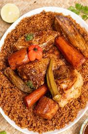

Home
Techp

Description
Le Tchep (ou Thiéboudienne ou encore Riz au poisson) est le plat national et emblématique du Sénégal. Il s'agit d'un plat de riz "gras" mijoté avec du poisson (ou parfois de la viande) et une variété de légumes, le tout cuit dans une sauce tomate riche et parfumée. Le nom vient du wolof "céebu jën" qui signifie "riz au poisson". Ce plat est inscrit au patrimoine culturel immatériel de l'UNESCO.
Ingredients
- 1 kg de riz (riz cassé parfumé de préférence)
- 1 gros poisson (Mérou, thiof, capitaine, etc., coupé en darnes) ou poulet
- 3 grosses tomates fraîches ou 1 petite boîte de concentré de tomates
- 2 gros oignons
- 2 gousses d'ail
- Piments (frais, au goût)
- Légumes:
- 2 carottes
- 1 morceau de potiron
- 1 petit chou blanc
- 2 aubergines
- 1 navet
- Gombo (optionnel)
- Manioc (optionnel)
- Herbes et épices : Persil, laurier, sel, poivre, et éventuellement un cube de bouillon.
- Huile végétale
- Eau
Etapes de preparation
- Préparer le poisson/la viande : Préparez une farce (appelée "Rof" ou "Nokoss") en pilant de l'ail, du persil, du poivre et du piment. Farcissez les morceaux de poisson avec ce mélange ou marinez la viande. Faites frire légèrement le poisson/la viande dans l'huile dans une grande marmite, puis retirez-les et réservez.
- Préparer la base de la sauce : Dans la même marmite, faites revenir les oignons émincés dans l'huile restante. Ajoutez la tomate concentrée (ou les tomates fraîches) et faites revenir jusqu'à ce que la tomate soit bien caramélisée (cela prend du temps et donne la couleur au plat).
- Cuire les légumes : Ajoutez de l'eau (environ 1,5 à 2 litres), le sel, le laurier, et les légumes les plus durs (carottes, manioc, navet). Laissez cuire jusqu'à ce que les légumes soient presque tendres. Retirez les légumes et réservez-les.
- Préparer le riz : Goûtez le bouillon et rectifiez l'assaisonnement. Le bouillon doit être assez salé. Lavez le riz à l'eau froide jusqu'à ce que l'eau soit claire, puis ajoutez le riz dans le bouillon.
- Cuisson finale : Laissez le riz cuire à feu doux, en remuant de temps en temps, jusqu'à absorption complète du bouillon et cuisson parfaite du riz. Ajoutez les légumes et le poisson (ou la viande) réservés sur le dessus du riz pour les réchauffer pendant les dernières minutes de cuisson.
- Service : Servez le riz dans un grand plat de service, en disposant le poisson/la viande et les légumes autour du riz.